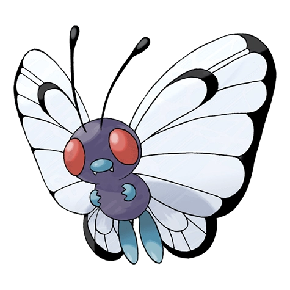

Назад
Баттерфри

Баттерфри — Покемон 1 поколения под номером 12 в Покедекс. Обитает он в регионе Канто и относится к Жучиному и Летающему типу. Это последняя стадия эволюции Покемона Катерпи. Баттерфри обладает превосходной способностью находить вкусный цветочный мёд. Он даже умеет извлекать и переносить мёд из цветов, растущих на расстоянии десяти километров от его гнезда.
Тип:
Жук
Летающий
Эволюция
# 012 Баттерфри
Финальная стадия